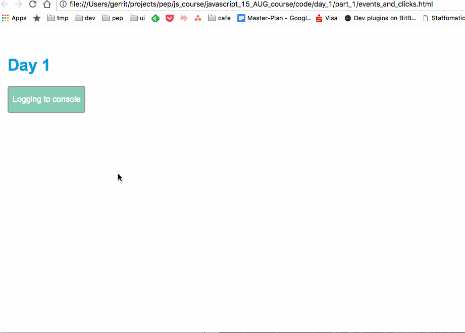

Kennenlernen
Who is who und was hat dich bewegt einen Javascript-Kurs zu belegen?

- Git - Datei-Versionierung
- Was ist Javascript und wie benutze ich das auf meiner Webseite?
- Erste Praxis - Events und Manipulation einzelner Elemente einer Webseite
Git & Github
- Es ist möglich lokal am Computer zu arbeiten und mit dem Server (Cloud) zu synchronisieren
- Git ist ein Datei-Versionierungs-tool
- Man kann gemeinsam an Code arbeiten
- Man kann Änderungen hinzufügen und alte "Versionen" behalten
Basics
-
Repositories
Ein Software-Projekt -
Branches
Eine "Version" des Software-Projekts, wo sicher Änderungen gemacht werden können und später zu der "Hauptversion" zusammengeführt werden. -
Commits
Eine lokale Änderung, welche man an den Server schickt, damit andere diese Änderung laden können. -
Pull Request
Es wurde ein Branch (Version) mit Änderungen erstellt. Ein Pull Request ist eine offizielle Anfrage, dass diese Änderungen zur Hauptversion hinzugefügt werden sollen. Dadurch gibt es eine Barriere, um das Projekt vor destruktiven Änderungen zu schützen.
Installation der Desktop-Software
Was ist Javascript und wie benutze ich das auf meiner Webseite?
Download des Kurs-Projekts mit Git.
https://github.com/easyPEP/javascript_15_AUG_courseLos gehts - Javascript ausführen
Alles innnerhalb des Script elements wird als JS-Code ausgeführt.
<script>
console.log('hallo welt');
</script>
Die Entwickler-Konsole öffnen
Typen
Alles innerhalb von 2 Anführungszeichen
'ein String'
"noch ein string mit Zahlen"
Es gibt Ganzzahlen - "Integer" genannt. Mit diesen kann man rechnen
1 + 3
Es gibt Dezimalzahlen - "decimals" genannt. Achtung!! Der Trenner ist ein "." und kein ","
1.5 + 4.23546
Variablen
Variablen speichern beliebige Informationen
Variablen werden mit dem befehlt 'var' eingeleitet und der Wert hinter dem '=' als Information gespeichert.
<script>
var number = 1;
number + number;
</script>
Funktionen
Führen beliebigen Code aus und geben einen Wert zurück.
<script>
function() double(number) {
return number + number;
}
double(2);
</script>
Einfache Beispiele
Text austauschen
<script>
var button = document.getElementById('click-button');
button.innerHTML = 'Bananarama';
</script>